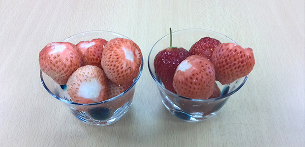
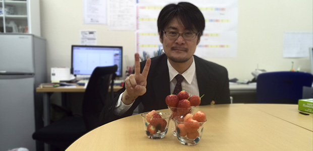

つい先日、研究所のメンバーで美味しい苺をいただく機会がありまして。
その経緯がちょっと面白かったので書かせてもらおうかと。
ちょっと非日常的な…
３月某日。
この日は夜の１０時ぐらいに仕事が終わり、塾本部の事務の方とカレーを食べに行くことにしました。
食べ終わった１１時過ぎ、私のスマホにLINEメールが。
お、Ｓ先生（前回のブログにも登場したタイのプロボクサー、笑）からか…ふむふむ。
「今夜空いてる？」
「特に何もないけど」
「家行ってよい？」
「まぁいいけど、どうしたの？」
いつもは既読無視バリバリの彼が、いやに返信早いぞ？？
そしてどこかせっぱつまったものを漂わせる内容。
一体どうしたというのか！
去年のブログで紹介しましたが、彼は健康のため自転車通勤を続けています。
しかしこの夜はとても寒かったため、億劫になったかと思ったのですが…
「実は一晩泊まらせてほしい人物アリ。私も付き合うから」
「え、ちょ…とりあえず詳しく聞かせてよ」
ということで、よくよく聞いてみると…
塾の卒業生（現在高校生、私も教えたことがある）が、親とケンカして家出してきたとのこと。
ふぅ～ヤレヤレだぜ。
と言いつつ、ちょっとワクワクしている自分がいました（笑）。
男たるもの…
その子はタンカ切って家を出たとはいえ、どうしたものか途方にくれていたとのこと。
そしてふと気がついたら、かつて学んだ塾の前に立っていたらしい。
夜も遅くはなっていたが塾は夜仕事、普通にＳ教室長がいて事の顛末を話したと。
まぁ普通は親に頭を下げて戻ればイイのだけれど、どうしてもそうはしたくなかったらしい。
Ｓ先生は知恵を絞って出した結論が…
「よし、独り暮らしの池村先生のウチに行こう！」
まぁそんな話でした。
（※ちなみにＳ先生は親が心配しないように内緒で連絡をしていた）
親も知っていることだし、快諾した私は帰宅して彼らを待ちました。
久しぶりにあった教え子は背も少し伸びていて、高校生らしくなっていました。
ここから延々と男同士のくだらない会話で盛り上がったことは言うまでもありません。
親に謝って家に帰ることを約束させ、朝６時過ぎに解散となりました。
まぁ男たるもの、家出の一度や二度はあるでしょう。
（ちなみに私は自ら家出したことはありませんが、外にほっぽり出されたことはしばしば笑）
成長過程において、自立するための通過儀礼のようなものです。
親子喧嘩の内容は割愛しますが、まあどうでもよいというか、大した原因ではありませんでした。
おそらく彼も家出するほどの事でないと内心わかっていたのだと思います。
察するに、勢いと言うか、これを機に家出というものをしてみようか…そんな冒険心のようなものもあったのかもしれません。
話してみると彼も思春期まっただ中で、今まさに成長中だなということを感じました。
なんにせよ、無事に家に帰還したとのことでよかったよかった。
そして後日。
塾の春期講習中、私が授業を終えてデスクワークをしようと研究所に戻ると…
その彼と母親が待っていました。
冒頭の苺はお詫びの品としていただいたものです。
茨城産で、２種類ありました。
一つは真っ赤で甘く、もう一つはピンク色で桃の風味がするもので、どちらもめちゃくちゃ美味しい！
研究所メンバーで即刻たいらげました。
まぁ私たちも楽しかったから全く迷惑じゃなかったのですが何度も謝られ、とても美味しい苺までいただいて、さらにブログのネタまでいただいちゃいまして、恐縮です！
ブログに載せることを快諾して下さったお母様、ありがとうございました。
ちなみに本人の許可はとっておりません（笑）。
